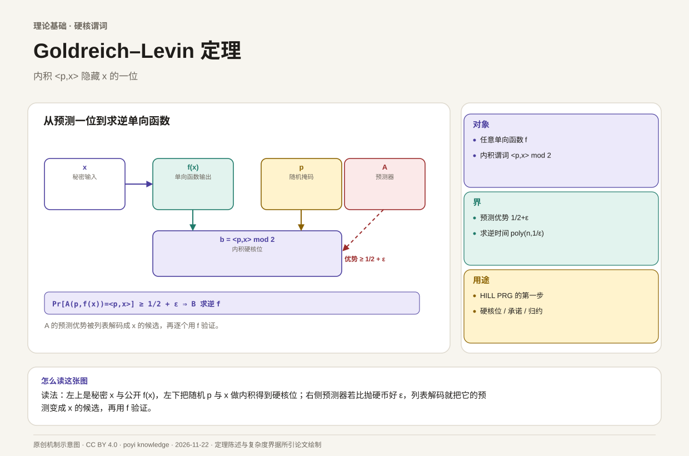
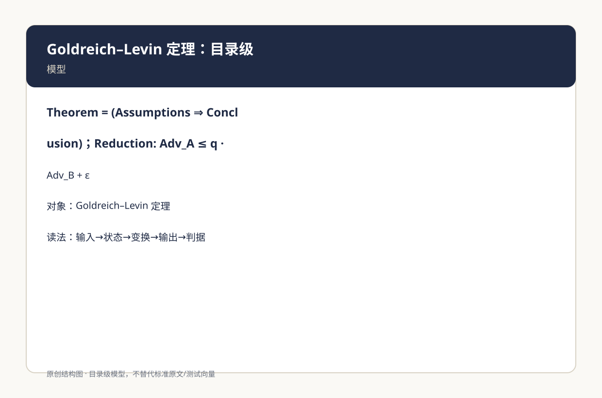

原理与机制
定理：Goldreich-Levin 定理（Goldreich-Levin Theorem）。### 内积是任何单向函数的硬核位
设 f:{0,1}^n→{0,1}^{m(n)} 是单向函数。把输入写成 (p,x)，|p|=|x|=n，定义 g(p,x) = (p, f(x)), b(p,x) = p·x mod 2 = Σ_i p_i x_i mod 2。Goldreich–Levin 定理说：b 是 g 的硬核谓词。即使已知 p 与 f(x)，任何多项式时间算法预测 b 的优势都不可忽略地小，除非它能求逆 f。### 预测优势的形式
若 A 满足 Pr[A(p,f(x)) = b(p,x)] ≥ 1/2 + ε(n) 且 ε 不可忽略，则存在概率多项式时间求逆器 B，运行时间 poly(n,1/ε)，以 poly(ε) 的概率从 f(x) 恢复 x。

为什么重要
RSA 的最低位、离散对数的某些位有各自的具体硬核证明；GL 给的是通用结论：任何单向函数都能长出硬核位。它把“隐藏一个比特”从具体假设提升为一般定理。### 它是 HILL 的第一步
GL 提供一位计算熵；HILL 把这些位、单向函数迭代与通用哈希组合成伪随机生成器。没有 GL，OWF→PRG 的链条就缺第一块。
应用与实例
- 硬核位：在 f(x) 公开后仍隐藏 x 的一个线性函数，可用于构造 PRG、承诺和零知识中的隐藏挑战。- PRG：反复调用单向函数并提取硬核位，再用混合论证证明输出不可预测；这是 Blum–Micali 生成器的通用化思路。- 归约：把“预测内积”的对手变成“求逆 f”的算法；这是 OWF 到 PRG 证明中的标准一步。

边界与攻击面
1.只给一位。每次调用只隐藏一个比特，不能直接当流密码。2.需要长度保持或填充。原定理对 f(p,x)=(p,g(x)) 形式陈述；一般 f 要先规范化。3.损失是 poly(1/ε)。若预测优势 ε=2^{-n/2}，求逆时间可能达到 2^{n/2}，不再多项式。4.只对均匀随机的 p 成立。若 p 的分布可预测，内积的隐藏性不自动成立。5.不给出具体 OWF 的显式硬核位；对具体方案仍要单独证明或选用已知硬核位。### 不等于“任何位都难预测”
GL 说的是内积这一位，不是 f(x) 的每一位。单向函数可能泄漏大量位；硬核位是经过挑选的、与 f(x) 联合分布仍隐藏的位。
历史与背景
Goldreich 与 Levin 在 STOC 1989 证明“所有单向函数都有硬核谓词”，回应 Levin 此前关于内积的猜想。证明使用 Hadamard 码的列表解码：把预测器当成带噪的码字访问，恢复 x 的候选表。### 后续
HILL 1999 把 GL 与通用哈希结合，得到 OWF→PRG；后续工作改进了列表解码效率与具体参数。GL 仍是理论构造，不是实用随机数发生器。
技术参数与复算边界
该条目的形式模型是 (\Pr[\mathrm{Bad}_A(\lambda)]\le \varepsilon(\lambda))。输入：输入：Goldreich-Levin 定理的公开参数、密钥/随机数与消息；变量说明：Bad 为归约中定义的失败事件，ε 为可忽略函数。 预期输出：按 Goldreich-Levin 定理 的规范执行后得到可验证的输出或可比较的优势界。 复算必须给出输入、步骤、输出和单位；示例只演示流程，不替代标准测试向量。
复杂度由密钥长度、分组/状态规模、轮数、随机数质量和敌手模型共同决定；参数越界、版本差异与实现侧信道都可能使公式结论失效。已登记限制：该条目只给出形式模型与可复算步骤，不声称已完成生产实现、侧信道认证或第三方安全评估。
参数与状态规模
公式 (\Pr[\mathrm{Bad}_A(\lambda)]\le \varepsilon(\lambda)) 的输入、输出和单位必须逐项登记；复算顺序为：1. 定义失败事件 2. 构造归约把攻击者转成困难问题求解器 3. 证明失败概率上界。
状态规模、密钥长度、分组长度和轮数决定复杂度；这些量不能从标题推断，必须以标准或实现文档为准。
逐步示例与核验
形式模型与复算步骤
[\Pr[\mathrm{Bad}_A(\lambda)]\le \varepsilon(\lambda)]
Goldreich-Levin 定理的公开参数、密钥/随机数与消息；变量说明：Bad 为归约中定义的失败事件，ε 为可忽略函数。1.定义失败事件。2.构造归约把攻击者转成困难问题求解器。3.证明失败概率上界。边界：公式只覆盖已登记的参数与假设；参数取值、标准版本和实现细节仍以来源为准。
参考出处
- Wikipedia search entry for Goldreich-Levin 定理. https://zh.wikipedia.org/w/index.php?search=Goldreich-Levin%20%E5%AE%9A%E7%90%86
- Handbook of Applied Cryptography (Menezes, van Oorschot, Vanstone). https://www.cacr.math.uwaterloo.ca/hac/